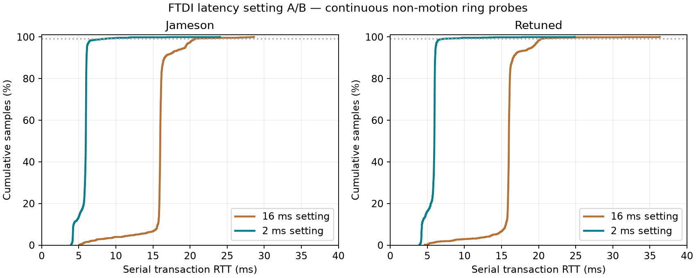

5 October 2026, America/Los_Angeles. Trial UTC: 2026-10-06T05:29:53.263994+00:00 through 2026-10-06T05:31:01.538860+00:00.
Only COM29 (FTDI A10JO345A, jameson) and COM48 (FTDI BG03STIBA, retuned) were changed. Original 16 ms registry values were saved, both new 2 ms values were read back, and only the idle drum server was restarted with its existing command line. No USB hub reset, driver reinstall, global setting, other port configuration, or other project process was changed. The other enumerated ports were CH344 COM9/11/13/14.
| Phase/ring | Samples before/after | Median ms | p99 ms | Maximum ms | Median reduction |
|---|---|---|---|---|---|
| spaced/jameson | 600/600 | 15.98 → 5.96 | 21.93 → 6.79 | 31.71 → 11.41 | 62.7% |
| spaced/retuned | 600/600 | 15.99 → 5.95 | 20.44 → 6.38 | 32.22 → 13.12 | 62.8% |
| continuous/jameson | 1200/1200 | 15.99 → 5.95 | 20.68 → 7.87 | 28.61 → 24.02 | 62.8% |
| continuous/retuned | 1200/1200 | 15.99 → 5.95 | 20.29 → 6.84 | 36.34 → 24.88 | 62.8% |

Full capture counter delta: {"n": 3640, "ok": 3640, "timeouts": 0, "crc_errors": 0, "errors": 0}. Playback counters stayed unchanged. Source-file hashes match the baseline capture.
Same capture code and HTTPS API path as the 16 ms baseline: 60 two-ring status sweeps at one-second start intervals, then 120 back-to-back sweeps. Each ring serializes ten QUERY_STRIKE transactions; rings run in parallel. RTT is measured inside the server and excludes HTTP/TLS and bus-lock acquisition. Exactly-one-success counter intervals yield raw samples, checked against the last RTT value. Other intervals are excluded: {}.
Probe durations include host serial draining, write/flush, device forwarding/processing, USB receive delivery, and Python parsing. They are not measurements of outbound strike latency or acoustic impact. No strikes were commanded; the server's startup enumeration only restored its existing ring addresses. Spaced sweeps still contain ten back-to-back transactions per ring. Normal browser polling was not disabled.
The large downward shift after changing the per-device timer supports receive buffering as a substantial contributor to the old transaction turnaround. The remaining delay and outliers include other parts of the stack. This sequential A/B test also includes a drum-server restart and was not randomized or repeated as A/B/A, so it is not a laboratory isolation of every timing source.
Faster replies can release the ring worker sooner for subsequent acknowledged notes and status queries. The gain is not automatically an equal improvement in strike onset or impact accuracy. No-ACK chords already avoid waiting for these replies. Existing learned mallet-lag compensation remains unchanged.
COM29 and COM48 remain at 2 ms; the drum server is running at the same HTTPS address. The original values and exact adapter identities are in latency_backup.json. The scoped administrator script supports -Mode Restore to restore 16 ms to these two adapters only; reopen the drum connections afterward.
Raw API snapshots · Individual samples · Detailed statistics · Capture metadata · Registry write/readback · Capture script · Analysis script · Original baseline